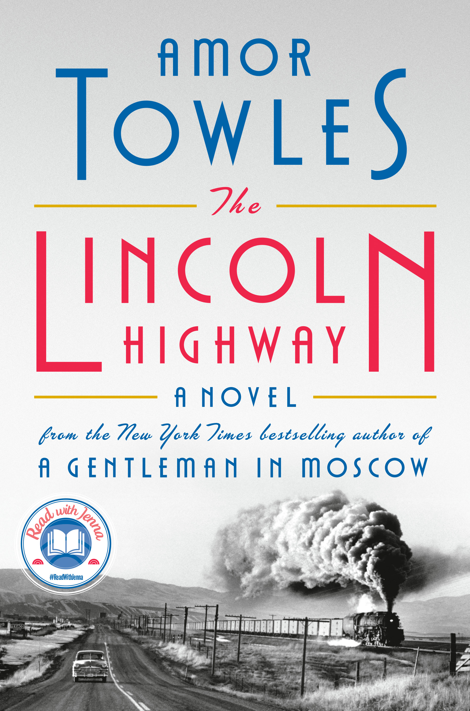

"The Lincoln Highway"
- Read on 2024-11-07
- Rating: ️️️️️
- Format: üéß (16 hours 39 minutes)
Still young, fresh out of prison, with a dead father, and a mother that has abandoned them, a young man and his kid brother go on an adventure, in hopes of following the Lincoln Highway to its end to find their mother. Before their journey even begins a wrench is thrown in the works, and... basically keeps happening.
Towles tells a good story. I understood the characters, and got a feel for their motivations, and yet I also felt like I was kept guessing on what would happen next. I also liked how the story was told from the perspective of a variety of the characters in the book.
- Prior: G-Man
- Next: A Gathering of Shadows